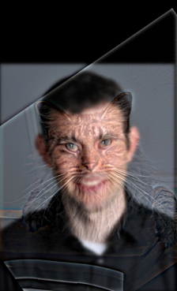

In this section, we use finite difference operators \( D_x \) and \( D_y \) to compute the gradients of the image, thereby extracting edge information.
Original Image
Gradient Computation:
\( D_x \) and \( D_y \) represent the gradient changes of the image in the horizontal and vertical directions, respectively. They can be considered as computing the rate of brightness change in these two directions (i.e., the partial derivatives of the image).
By convolving the image with \( D_x \) and \( D_y \), we can obtain gradient images in the x-direction (horizontal) and y-direction (vertical). These gradient images indicate areas in the image where brightness changes sharply, which are potential edges.
Derivative DxDerivative Dy
Gradient Magnitude Image:
The gradient magnitude image can be calculated by combining the gradients in both directions using the following formula:
$$ \text{Gradient Magnitude} = \sqrt{(D_x * I)^2 + (D_y * I)^2} $$
where,
\( I \) is the original image,
\( D_x * I \) and \( D_y * I \) are the gradients of the image in the x and y directions, respectively.
The gradient magnitude image represents the edge strength at each pixel. A larger magnitude indicates a greater brightness change at that pixel, i.e., a more prominent edge.
Combined Gradient
Binarization Processing:
To extract significant edges from the gradient magnitude image, we can set a threshold to binarize the gradient magnitude image. Which means, we keep only the gradients greater than the threshold (strong edges) and suppress gradients smaller than the threshold (weak edges or noise) to zero.
By repeatedly adjusting this threshold, we can find an appropriate value that makes the edge information in the image as clear as possible while suppressing most of the noise. Here, I choose a threshold of 0.000999999.
Combined Binarized
Part 1.2: Derivative of Gaussian (DoG) Filter
Firstly, we convolve the image with a Gaussian filter to obtain a blurred image. The Gaussian filter is a smoothing filter that can effectively remove high-frequency noise in the image, making the image smoother.
Blur Image
Blur Image Derivative DxBlur Image Derivative Dy
Blur Image Combined Gradient
Next, we perform edge detection on the blurred image. This is different from directly performing edge detection on the original image in Part 1.1. By comparing the binarized edge images of these two methods, we can observe the following:
Binarized edge image in Part 1.1 (without smoothing)Binarized edge image in Part 1.2 (after Gaussian smoothing)
We can find that the image processed by Gaussian smoothing performs better in edge detection because the smoothing process suppresses noise while retaining the main edge information.
In addition, there is another processing method, which is to convolve the Gaussian filter with \( D_x \) and \( D_y \) to obtain the Derivative of Gaussian (DoG) filters, and then convolve these DoG filters with the original image. This way, we can perform smoothing and edge detection in one convolution operation.
Result of \(G * D_x\)Result of \(G * D_y\)
Result of \((G * D_x) * I\)Result of \((G * D_y) * I\)
Derivative of Gaussian Combined Gradient
The mathematical principle of this process can be explained using the commutative property of convolution:
$$ G * (D_x * I) = (G * D_x) * I $$
where:
\( G \) is the Gaussian filter
\( D_x \) is the horizontal gradient operator
\( I \) is the original image
\( * \) represents the convolution operation.
\( G * (D_x * I) \)\( (G * D_x) * I \)
This shows that convolving the image with the Gaussian filter first and then performing edge detection is equivalent to combining the Gaussian filter and the gradient operator first and then applying it to the original image. This method can reduce the computational cost of two convolutions and improve processing efficiency.
Part 2: Fun with Frequencies!
Part 2.1: Image "Sharpening"
In this section, our main goal is to sharpen the image. The basic principle of image sharpening is to enhance the high-frequency parts of the image, making the image look clearer and more detailed.
Gaussian Smoothing:
Firstly, use a Gaussian filter to smooth the image, which can remove some high-frequency noise in the image, making the image more blurred and smooth.
Original Image of Taj MahalOriginal Image of Susuwatari
Blur Image of Taj MahalBlur Image of Susuwatari
High-Frequency Enhancement:
Next, subtract the smoothed image from the original image to obtain the high-frequency parts of the image. This information contains the details and edges in the image.
High Frequency Image of Taj MahalHigh Frequency Image of Susuwatari
Image Sharpening:
Finally, add the high-frequency enhancement back to the original image to get the sharpened image. This process can make the details and edges in the image clearer, and the contrast will also be improved.
Sharpen Image of Taj MahalSharpen Image of Susuwatari
Observations:
Taj Mahal Image
Sharpened Image: Details such as the edges of the building and the lines of the windows are clearer, but there is a slight increase in noise, especially in the sky area.
Original Image: The overall appearance is softer and more natural, with smoother detail rendering.
Original Image of Taj MahalSharpen Image of Taj Mahal
Susuwatari Image
Sharpened Image: The edges of the Susuwatari are sharper, and the lines of its eyes and body are more prominent, but the background details appear rougher due to increased noise.
Original Image: The Susuwatari has a more natural feel overall, with smooth background colors and details, and no excessive noise.
Original Image of SusuwatariSharpen Image of Susuwatari
Part 2.2: Hybrid Images
In this section, we will create hybrid images by combining different frequency components of two images. Such images will present different visual effects at different viewing distances:
When viewed up close: High-frequency components (such as clear edges and details) dominate, so the high-frequency image is mainly seen.
When viewed from a distance: Low-frequency components (such as blurred outlines and general shapes) are more noticeable, so the low-frequency image is mainly seen.
Frequency Separation:
First, we perform different filtering operations on the two images:
High-Pass Filter: Apply a high-pass filter to the first image to retain its high-frequency components (clear details and edges of the image) and remove low-frequency components (blurred parts).
Low-Pass Filter: Apply a low-pass filter to the second image to retain its low-frequency components (blurred outlines and general shapes) and remove high-frequency components (details).
Low Frequency Image - Human FaceHigh Frequency Image - Cat
Cutoff Frequency:
The cutoff-frequency refers to the threshold frequency used to distinguish between high-frequency and low-frequency components. It determines which frequency components will be retained and which will be filtered out.
For Low-Pass Filters: The cutoff frequency determines how much of the lower frequency content in the image is preserved. Increasing this value will result in the image becoming more blurred.
For High-Pass Filters: The cutoff frequency determines how much of the higher frequency content in the image is preserved. Increasing this value will make the edges of the image more pronounced.
Hybrid Image Generation:
Overlay the first image processed with the high-pass filter and the second image processed with the low-pass filter (you can use addition or averaging). In this way, we get a hybrid image that will have different visual effects at different viewing distances.

Hybrid Image Human Face and Cat Face
Urban and Nature
Low Frequency Image - UrbanHigh Frequency Image - Nature
Hybrid Image
The Starry Night and Mona Lisa
Low Frequency Image - The Starry NightHigh Frequency Image - Mona Lisa
Hybrid Image
Frequency Analysis
Frequency Analysis:
Frequency of UrbanFrequency of Nature
Frequency of Urban (low frequency)Frequency of Nature (high frequency)
Frequency of the Hybrid Image
Part 2.3: Gaussian and Laplacian Stacks
In this section, we will implement Gaussian Stacks and Laplacian Stacks, which are important tools in multi-resolution image processing.
Gaussian Stack
Used to perform multi-level smoothing on images to retain different frequency components of the image. Unlike a pyramid, a stack does not perform downsampling at each level.
Laplacian Stack
The Laplacian Stack is used to extract edges and detail information of the image; it can be considered as the difference between adjacent layers in the Gaussian Stack.
Part 2.4: Multiresolution Blending (a.k.a. the oraple!)
In this section, we will use Gaussian and Laplacian Stacks to perform multi-resolution image blending, achieving seamless transitions between images.
Constructing Gaussian and Laplacian Pyramids
We need to construct the Gaussian and Laplacian stack for both images separately. Additionally, we need to build the Gaussian stack for the mask. The Gaussian stack captures the overall structure of the image, while the Laplacian stack retains the detailed information of the image.
Blending the Pyramids
At this stage, we blend the Laplacian stack of the two images using the Gaussian stack of the mask. Specifically, at each level, we apply the following formula:
This formula means that the Gaussian stack of the mask is used to balance the Laplacian stack of the two images at each level. A higher mask value leans towards retaining the details of the first image, while a lower mask value leans towards retaining the details of the second image.
Reconstructing the Final Image
Finally, we start from the lowest level of the Laplacian image and progressively reconstruct the image level by level. At each level, we add the upsampled Laplacian image to the blended image, until we reach the original resolution. This gives us the final blended image.